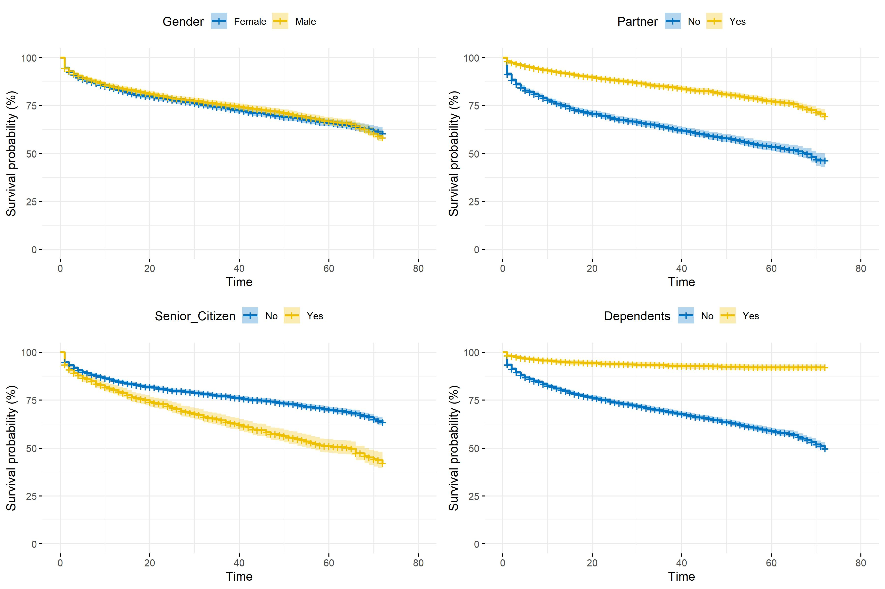
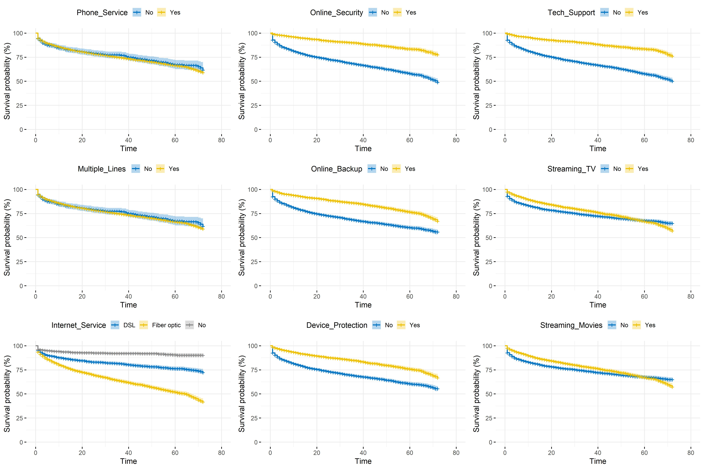

4.2 Churn_Value and Tenure_Months
As the combination of these two features form the response variable in the duration models, a relevant approach to have an overall description of the risk of attrition may be to draw the raw survival curves depending on treatment variables. Pearson’s \(\chi^2\) tests are also performed so as to test the statistical relationships between the churn indicator variable and explanatory features. Pearson’s \(\chi^2\) test determines whether there is a statistically significant difference between the expected frequencies and the observed frequencies in one or more categories of a contingency table. It is thus adapted to test whether two categorical variables are statistically independent. In this context, it appears interesting to use explanatory features related demographic, customer account and services subscribed as treatment variables when fitting the Kaplan-Meier estimator and implementing the tests.
Demographic data
Table 4.2 depicts the \(\chi^2\) tests’ results performed on demographic variables. Given the p-values are ranked in ascending order and given the lower the p value the stronger link between two categorical variables, Dependents appears to be the most correlated feature with Churn_Label. When comparing this result with the corresponding survival plot in figure 4.1, it can be noted that customers with dependants have a longer lifetime in the portfolio. Conversely, Gender and Churn_Label are statistically independent as stated by the high test’s p value (\(\approx .49\)).
| Statistic | Df | Critical Value | p-value | |
|---|---|---|---|---|
| Dependents | 431.65 | 1 | 3.84 | 7.1e-96 |
| Senior_Citizen | 158.44 | 1 | 3.84 | 2.5e-36 |
| Partner | 157.50 | 1 | 3.84 | 4e-36 |
| Gender | 0.48 | 1 | 3.84 | 4.9e-01 |
In section 3.4, nonparametric estimation has been introduced focusing on two major estimators: Kaplan-Meier for survival function estimation and Nelson-Aalen for estimating the cumulative hazard function. In this part, it is decided to draw survival curves related to customer lifetime in the portfolio depending on different types of treatment variables. In the figure below, four main results can be highlighted ceteris paribus:
- There seems to be no difference in terms of lifetime duration between men and women.
- Customers with a partner appear to stay longer in the TSP’s portfolio.
- Being a senior citizen tends to shorten customer lifetime.
- As said before, customer with children or other dependents seem to be more loyal.
Figure 4.1: Kaplan-Meier survival function depending on demographic information
Data on services subscribed
When dealing with data on customers of a TSP, features related to services subscribed may be relevant to explain the estimated survival of these customers in the portfolio.
Table 4.3 presents results of \(\chi^2\) tests performed between Churn_Label and each services information variable. As in the previous table, p-values are ranked in ascending order. One can note that Online_Security and Tech_Support are the most linked to the churn indicator variable. However, variable carrying information on phone services are less correlated to Churn_Label.
| Statistic | Df | Critical Value | p-value | |
|---|---|---|---|---|
| Internet_Service | 728.70 | 2 | 5.99 | 5.8e-159 |
| Online_Security | 205.42 | 1 | 3.84 | 1.4e-46 |
| Tech_Support | 189.97 | 1 | 3.84 | 3.2e-43 |
| Online_Backup | 47.25 | 1 | 3.84 | 6.3e-12 |
| Device_Protection | 30.50 | 1 | 3.84 | 3.3e-08 |
| Streaming_TV | 27.84 | 1 | 3.84 | 1.3e-07 |
| Streaming_Movies | 25.76 | 1 | 3.84 | 3.9e-07 |
| Phone_Service | 0.87 | 1 | 3.84 | 3.5e-01 |
| Multiple_Lines | 0.87 | 1 | 3.84 | 3.5e-01 |
Figure 4.2 illustrates the \(\chi^2\) tests’ results by representing the Kaplan-Meier estimated survivor function related to customer lifetime according to treatment variables on services subscribed. On the one hand, there seems to be no significant difference in terms of survival whether the customer uses phone service or not. The same remark can be pointed out based on whether the client has multiple lines as Phone_Service and Multiple_Lines might be quite correlated. In contrast, huge survival time difference can be noticed between customers with online security and those without, as well as between those having subscribed to technical support and those who have not. Finally, not using Internet service appears to have a positive influence on customer lifetime.
Figure 4.2: Kaplan-Meier survival function depending on services subscribed
Customer account data
Variables on customer account such as the payment method used and the type of contract between the TSP and the client can be rich in information on customer lifetime. Indeed, table 4.4 shows that churn status strongly depends on the three variables, Contract being the most linked to Churn_Label.
| Statistic | Df | Critical Value | p-value | |
|---|---|---|---|---|
| Contract | 1179.55 | 2 | 5.99 | 7.3e-257 |
| Payment_Method | 645.43 | 3 | 7.81 | 1.4e-139 |
| Paperless_Billing | 256.87 | 1 | 3.84 | 8.2e-58 |
Figure 4.3 enriches the \(\chi^2\) tests’ results as it draws survival curves for each treatment variable’s categories. When the firm/client contract is type month-to-month, the estimated survivor function decreases far more than for one-year or two-year contracts. In other words, the churn hazard is higher when the contract is renewed each month. This result makes sense as the customer may decide to leave the portfolio once the month has ended as they are not commited for one or two years. Furthermore, clients with paperless billing contracts are more prone to churn, just like those paying by electronic check. It can be deduce that the attrition risk is higher when the payment method is simplified.
Figure 4.3: Kaplan-Meier survival function depending on customer account information